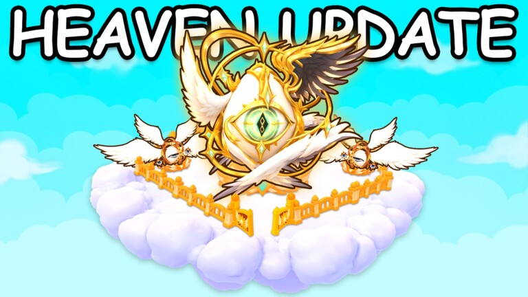
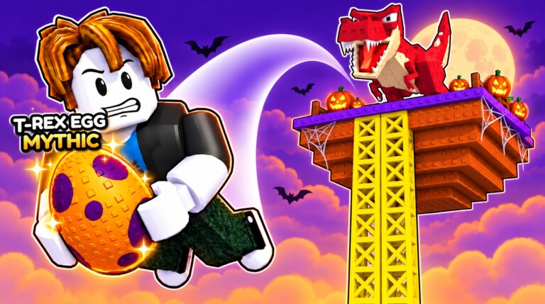
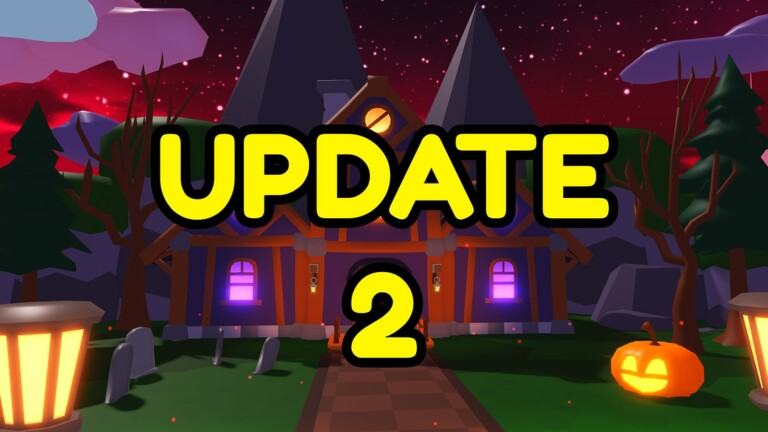
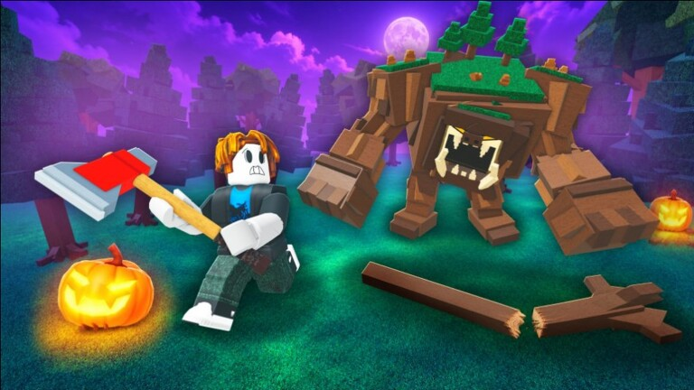
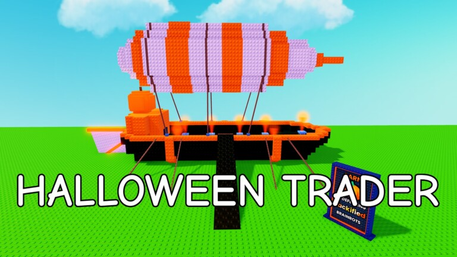

🎃 Sâmbătă e nebunie pe Roblox: 6 update-uri care pornesc în weekend

🎃 Sâmbăta asta, 24 octombrie, pornesc pe Roblox 6 evenimente noi în jocuri diferite, de la după-amiază până după miezul nopții. Mai jos ai fiecare joc cu ora de start și de final (ora României) și linkul oficial al evenimentului.
⏰ Atenție: în noaptea de sâmbătă spre duminică se dă ora înapoi (25 oct, 04:00 devine 03:00). Orele de final de mai jos sunt deja calculate pe ora de iarnă.

🐾 1. Ride A Pet: Heaven Update
- 🕓 Start: sâmbătă 24 oct, 16:00
- 🏁 Final: marți 27 oct, 15:00
- 📝 Pe pagina oficială: „AA, x2 Cash, + Really Cool Update”, adică Admin Abuse, bani x2 și un update nou
- 📅 https://www.roblox.com/events/1484580516891066933
- 🔙 Update-ul secret de sâmbăta trecută: https://pyromanc3r777.github.io/vexu-hq/posts/ride-a-pet-update-secret-sambata-la-16-00.html

🥚 2. Climb For Animals Eggs: HALLOWEEN UPD
- 🕠 Start: sâmbătă 24 oct, 17:35
- 🏁 Final: marți 27 oct, 08:35
- 🚪 O dimensiune nouă de Halloween de explorat
- 🎃 Ouă exclusive de Halloween
- 👀 Restul e „surpriză”, scrie pe pagina oficială
- 📅 https://www.roblox.com/events/8647873480399913570
⚔️ 3. Death Ball: NEW RAID BOSS
- 🕡 Start: sâmbătă 24 oct, 18:30
- 🏁 Final: sâmbătă 7 nov, 17:30 (două săptămâni)
- 🧙 Subtitlul oficial: „Witch Sisters are here..”. Alte detalii despre boss nu sunt anunțate încă
- 📅 https://www.roblox.com/events/8597869761575125641

👆 4. Tap Simulator REBORN: UPDATE 2 + 🎃 PT 2
- 🕙 Start: sâmbătă 24 oct, 22:00
- 🏁 Final: duminică 25 oct, 19:00
- 🏝️ Pe pagina oficială: „New Island + More”, adică o insulă nouă și altele. Fără alte detalii
- 📅 https://www.roblox.com/events/7912867756482101915

🪵 5. Chop A Forest: „???” HALLOWEEN UPD.
- 🕙 Start: sâmbătă 24 oct, 22:00
- 🏁 Final: sâmbătă 31 oct, 21:55
- ❓ Titlul și descrierea sunt doar „???”. Ce aduce e încă secret
- 📅 https://www.roblox.com/events/7871286754760852034

🌻 6. Plants & Brainrots: 🎃 HALLOWEEN TRADER
- 🕐 Start: duminică 25 oct, 01:00 (noaptea de sâmbătă spre duminică)
- 🏁 Final: sâmbătă 31 oct, 23:45
- 🛒 Revine Travelling Trader, cu o notă spooky, plus câteva recompense OG, plante, brainrots și altele
- 📅 https://www.roblox.com/events/7375566689850753589
🌱 Și Grow a Garden pornește Ghoul Garden 2 diseară la 23:30, tot ce știm e aici: https://pyromanc3r777.github.io/vexu-hq/posts/grow-a-garden-ghoul-garden-2-porneste-sambata-24-oct-2330.html
🍟 Sell Fries! Chapter 2 NU mai e în seara asta, a fost mutat pe 31 oct, la 21:00: https://pyromanc3r777.github.io/vexu-hq/posts/sell-fries-chapter-2-mutat-pe-31-oct-la-2100.html
💡 Orele și textele sunt luate de pe paginile oficiale ale evenimentelor pe Roblox (verificate sâmbătă, ~10:40 RO). Dezvoltatorii le pot muta, așa că verifică linkul înainte să intri.
Follow pe TikTok @vexu_online și abonare pe YouTube la VEXU Online. Follow = Au ce bile! 💥